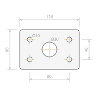
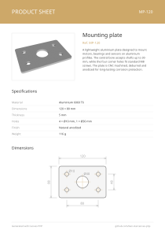

Home
#Introduction
Draw once, compose endlessly
Canvas PHP is an object-oriented graphics library that combines drawing and document generation through a single, consistent PHP API. Create technical drawings, product illustrations, catalogs and PDF documents using the same graphical foundation.
Everything is a Canvas
A Canvas can be used as a standalone drawing or a reusable graphical component. Components can be combined into assemblies and integrated into larger drawings or documents.
Component
Create reusable graphical components from simple shapes and elements.
Assembly
Combine reusable graphical components to build complex assemblies.
Document
Integrate drawings, text and images into complete, structured documents.
Built for reuse, not repetition
Why recreate the same geometry for every document ? Canvas PHP allows graphical components to be reused, drawings to be generated from parameters, and multiple documents to share the same drawing logic. Less duplicated code, simpler maintenance and more consistent results.
One engine, many possibilities
Technical drawings
Precise drawings of mechanical parts and technical assemblies.
Product catalogs
Detailed product illustrations, specifications and datasheets.
PDF documents
Structured documents combining drawings, text and images.
Simple by design, powerful by composition
Start with a shape. Build a component. Compose an entire document. Canvas PHP provides a consistent foundation for graphical projects of any size.
#Installation
Canvas PHP is distributed as a single PHP file, making integration into existing projects straightforward. No Composer, autoloader or build tools are required. Simply download the library, include it in your application and start drawing.
Requirements
Canvas PHP relies on standard PHP functionality, with additional extensions required for certain rendering features.
| Requirement | Description |
|---|---|
| PHP | Tested with PHP 8.3 |
| GD | Required for PNG and JPEG output, with FreeType support for text |
| Zlib | Required for PDF output |
| Ctype | Required for hexadecimal color validation |
SVG and DXF output only require Ctype. PDF output uses its own rendering engine and does not require GD.
#Formats
Each rendering class provides its own default size and measurement unit.
| Class | Default size | Default unit |
|---|---|---|
| svg | None | px |
| dxf | None | mm |
| png | None | px |
| jpg | None | px |
| 210 × 297 | mm |
SVG, PNG and JPEG documents require a width and height before generation. DXF drawings have no page size, and PDF documents start in A4 format.
All formats share the same API, but some features depend on the output format :
| Feature | SVG | DXF | PNG | JPEG | PDF |
|---|---|---|---|---|---|
| Fill | ✓ | ✗ | ✓ | ✓ | ✓ |
| Stroke transparency | ✓ | ✗ | ✗ | ✗ | ✓ |
| Text and paragraphs | ✓ | ✓ | ✓ | ✓ | ✓ |
| Embedded fonts | ✓ | ✗ | - | - | ✓ |
| Images | ✓ | ✗ | ✓ | ✓ | ✓ |
| Layers | ✓ | ✓ | ✗ | ✗ | ✓ |
| Links | ✓ | ✗ | ✗ | ✗ | ✓ |
| Pages, bookmarks and metadata | ✗ | ✗ | ✗ | ✗ | ✓ |
DXF text uses the font name only. The font must be installed in the CAD application. Images cannot be exported to DXF, and an image element prevents DXF generation.
Download and include
Download the canvas.php file from the GitHub repository and place it in your project directory.
That's all you need to get started. Canvas PHP provides dedicated rendering classes for SVG, DXF, PNG, JPEG and PDF documents.
Each rendering class also provides a shorter alias :
| Class | Alias |
|---|---|
| canvas_svg | svg |
| canvas_dxf | dxf |
| canvas_png | png |
| canvas_jpg | jpg |
| canvas_pdf |
Both class names can be used interchangeably.
Verify the installation
Create a simple SVG drawing to verify that Canvas PHP is working correctly.
require_once __DIR__ . '/canvas.php';
$canvas = new svg( 200, 120 );
$canvas->stroke_color( '#CDA869' );
$canvas->line( 20, 20, 180, 100 );
$canvas->save( __DIR__ . '/drawing.svg' );This example creates a 200 × 120 SVG document containing a gold-colored diagonal line and saves it as drawing.svg.
SVG generation does not require GD, making it a convenient way to test your installation.
Working with fonts
Canvas PHP supports TrueType ( .ttf ) fonts for drawing text. By default, font files are searched in the fonts directory located alongside canvas.php.
You can also specify a font file directly or configure a custom font directory.
Fonts are only required when your drawings include text.
Only TrueType outlines are supported. OpenType CFF fonts ( .otf ) and font collections ( .ttc ) cannot be used. Every character of the text must exist in the selected font, and kerning is not applied.
#Quick Start
Learn how to create reusable graphical components, combine them into drawings and export the results in different formats using Canvas PHP.
The following examples build on each other to form a complete PHP script.
Create a component
A Canvas holds graphical elements independently of any output format. Start by creating a simple component using a rectangle and a circle.
require_once __DIR__ . '/canvas.php';
$component = new canvas();
$component->stroke_color( '#CDA869' );
$component->stroke_width( 2 );
$component->fill_color( '#F9F9F9' );
$component->rectangle( 20, 20, 80, 80, 10 );
$component->fill_color( '#FFFFFF' );
$component->circle( 60, 60, 20 );Compose a drawing
Create an SVG drawing and add the component using append(). Translate the component to reuse it at a different position.
$drawing = new svg( 240, 120 );
$drawing->append( $component );
$component->translate( 120, 0 );
$drawing->append( $component );
$drawing->save( __DIR__ . '/drawing.svg' );The resulting SVG contains two copies of the same graphical component.
Note : append() copies the graphical elements at the time of insertion. Subsequent changes to the source Canvas do not affect previously added elements.
Export to PDF
The same graphical content can be reused with another rendering engine. Create a PDF document and append the existing drawing.
Both documents are generated from the same graphical elements, without duplicating the drawing logic.
Canvas PHP also supports DXF, PNG and JPEG output. PNG and JPEG generation requires the GD extension.
Examples
#Technical drawing
A dimensioned mounting plate drawn once and exported to SVG, PDF, DXF, JPEG and PNG.



Reusable functions
The drawing is built with two small functions. The hole() function draws a hole with its axes, and the dimension() function draws a complete dimension from two points : extension lines, dimension line, arrows and an oriented label.
Each function defines its own styles and layer, so the result does not depend on the order of the calls. Five holes and four dimensions are created with nine lines of code.
Layers
Outlines, axes and dimensions are placed on separate layers. They become DXF layers in CAD applications, optional content groups in PDF viewers and named groups in SVG files.
One drawing, five formats
The plate is drawn in millimeters on a single Canvas, then centered on a 200 × 200 mm page with translate(). The same Canvas is appended to each document in a simple loop.
The plate uses a light gray fill and the holes a white fill. DXF output has no fill, so only the outlines are exported. The PNG output keeps a transparent background around the plate.
<?php
//-> Require
require_once( __DIR__ . '/../canvas.php' );
//-> Dimension
function dimension( $canvas, $x1, $y1, $x2, $y2, $offset, $label ) {
//-> Layer
$canvas->layer( 'Dimensions' );
//-> Direction
$length = hypot( $x2 - $x1, $y2 - $y1 );
$ux = ( $x2 - $x1 ) / $length;
$uy = ( $y2 - $y1 ) / $length;
$nx = $uy;
$ny = -$ux;
//-> Side
if( $offset > 0 ) {
$side = 1;
} else {
$side = -1;
}
//-> Dimension line
$ax = $x1 + $nx * $offset;
$ay = $y1 + $ny * $offset;
$bx = $x2 + $nx * $offset;
$by = $y2 + $ny * $offset;
//-> Lines
$canvas
->stroke_color( '#999999' )
->stroke_width( 0.5 )
->line( $x1 + $nx * $side * 5, $y1 + $ny * $side * 5, $ax + $nx * $side * 5, $ay + $ny * $side * 5 )
->line( $x2 + $nx * $side * 5, $y2 + $ny * $side * 5, $bx + $nx * $side * 5, $by + $ny * $side * 5 )
->line( $ax, $ay, $bx, $by )
->line( $ax, $ay, $ax + $ux * 5 + $nx * 2, $ay + $uy * 5 + $ny * 2 )
->line( $ax, $ay, $ax + $ux * 5 - $nx * 2, $ay + $uy * 5 - $ny * 2 )
->line( $bx, $by, $bx - $ux * 5 + $nx * 2, $by - $uy * 5 + $ny * 2 )
->line( $bx, $by, $bx - $ux * 5 - $nx * 2, $by - $uy * 5 - $ny * 2 );
//-> Label
$canvas
->text_size( 8 )
->text_color( '#999999' )
->text( ( $ax + $bx ) / 2 + $nx * 3, ( $ay + $by ) / 2 + $ny * 3, $label, rad2deg( atan2( $uy, $ux ) ), 'bottom-center' );
}
//-> Hole
function hole( $canvas, $x, $y, $radius ) {
//-> Circle
$canvas
->layer( 'Outline' )
->fill_color( '#FFFFFF' )
->stroke_color( '#666666' )
->stroke_width( 1 )
->circle( $x, $y, $radius );
//-> Axes
$canvas
->layer( 'Axes' )
->stroke_color( '#CDA869' )
->stroke_width( 0.5 )
->line( $x - $radius - 5, $y, $x + $radius + 5, $y )
->line( $x, $y - $radius - 5, $x, $y + $radius + 5 );
}
//-> Canvas
$canvas = new canvas();
$canvas->unit( 'mm' );
$canvas->text_font( __DIR__ . '/Montserrat.ttf' );
//-> Boundaries
$canvas->layer( 'Outline' )->fill_color( '#F5F5F5' )->stroke_color( '#666666' )->stroke_width( 1 )->rectangle( 0, 0, 120, 80, 5 );
//-> Holes
hole( $canvas, 60, 40, 15 );
hole( $canvas, 20, 20, 5 );
hole( $canvas, 100, 20, 5 );
hole( $canvas, 100, 60, 5 );
hole( $canvas, 20, 60, 5 );
//-> Dimensions
dimension( $canvas, 0, 0, 120, 0, 20, '120' );
dimension( $canvas, 0, 80, 0, 0, 20, '80' );
dimension( $canvas, 20, 80, 100, 80, -20, '80' );
dimension( $canvas, 120, 60, 120, 20, -20, '40' );
//-> Diameters
$canvas
->layer( 'Dimensions' )
->text_size( 8 )
->text_color( '#999999' )
->text( 63, 22, 'Ø30', 0, 'left-bottom' )
->text( 25, 15, 'Ø10', 0, 'left-bottom' );
//-> Center the plate on the page ( 200 x 200 )
$canvas->translate( ( 100 - 60 ), ( 100 - 40 ) );
//-> Output
foreach( array( 'svg', 'pdf', 'dxf', 'jpg', 'png' ) as $format ) {
//-> Document
$document = new $format( 200, 200, 'mm' );
$document->append( $canvas )->save( __DIR__ . '/technical_drawing.' . $format );
}The script expects canvas.php in the parent directory and Montserrat.ttf alongside it. In DXF, the font must also be installed in the CAD application.
#Product sheet
An A4 product sheet combining a photo, a justified description, a specification table and the technical drawing of the first example.

Automatic layout
The product data is stored in a simple PHP array. The specification table is generated with a loop, and paragraph_height() measures the description, so the next section always starts below the tallest block, whatever the length of the text.
Reusing the technical drawing
The script includes the first example and reuses its Canvas. The drawing is reduced with scale(), positioned with translate() and appended to the PDF document. It remains a vector drawing, sharp at any zoom level.
Note : including technical_drawing.php also regenerates its five output files.
Links and metadata
The footer contains a clickable link created with link(), and the document title and subject are stored as PDF metadata.
<?php
//-> Require
require_once( __DIR__ . '/../canvas.php' );
require_once( __DIR__ . '/technical_drawing.php' );
//-> Product
$product =
array(
'name' => 'Mounting plate',
'reference' => 'MP-120',
'image' => __DIR__ . '/product_sheet.jpg',
'description' => 'A lightweight aluminium plate designed to mount motors, bearings and sensors on aluminium profiles. The central bore accepts shafts up to 30 mm, while the four corner holes fit standard M8 screws. The plate is CNC machined, deburred and anodized for long-lasting corrosion protection.',
'specifications' =>
array(
'Material' => 'Aluminium 6060 T6',
'Dimensions' => '120 × 80 mm',
'Thickness' => '5 mm',
'Holes' => '4 × Ø10 mm, 1 × Ø30 mm',
'Finish' => 'Natural anodized',
'Weight' => '116 g',
),
);
//-> Document
$pdf = new pdf();
$pdf->text_font( __DIR__ . '/Montserrat.ttf' );
$pdf->metadata( 'title', $product['name'] . ' ' . $product['reference'] );
$pdf->metadata( 'subject', 'Product sheet' );
//-> Header
$pdf->fill_color( '#CDA869' )->stroke_width( 0 )->rectangle( 0, 0, 210, 30 );
$pdf->text_size( 7 )->text_color( '#FFFFFF' )->text( 15, 15, 'PRODUCT SHEET', 0, 'middle-left' );
$pdf->text_size( 5 )->text_color( '#FFFFFF' )->text( 195, 15, $product['reference'], 0, 'middle-right' );
//-> Image
$pdf->image( $product['image'], 15, 42, 80, 60 );
$pdf->fill_color( '#00000000' )->stroke_color( '#DDDDDD' )->stroke_width( 0.3 )->rectangle( 15, 42, 80, 60 );
//-> Name
$pdf->text_size( 7 )->text_color( '#333333' )->text( 105, 42, $product['name'], 0, 'top-left' );
$pdf->text_size( 4 )->text_color( '#CDA869' )->text( 105, 53, 'Ref. ' . $product['reference'], 0, 'top-left' );
//-> Description
$pdf->text_size( 3.5 )->text_color( '#555555' );
$pdf->paragraph( 105, 62, 90, $product['description'], 0, 'justified', 'top-left', 5 );
//-> Next position
$y = max( 42 + 60, 62 + $pdf->paragraph_height( 90, $product['description'], 5 ) ) + 12;
//-> Specifications
$pdf->text_size( 5 )->text_color( '#333333' )->text( 15, $y, 'Specifications', 0, 'top-left' );
$y += 12;
foreach( $product['specifications'] as $label => $value ) {
//-> Row
$pdf->text_size( 3.5 )->text_color( '#999999' )->text( 15, $y + 4, $label, 0, 'middle-left' );
$pdf->text_size( 3.5 )->text_color( '#333333' )->text( 75, $y + 4, $value, 0, 'middle-left' );
$pdf->stroke_color( '#E5E5E5' )->stroke_width( 0.3 )->line( 15, $y + 8, 195, $y + 8 );
//-> Next row
$y += 8;
}
//-> Drawing
$y += 12;
$pdf->text_size( 5 )->text_color( '#333333' )->text( 15, $y, 'Dimensions', 0, 'top-left' );
$canvas->scale( 0.5 );
$canvas->translate( 55, $y - 5 );
$pdf->append( $canvas );
//-> Footer
$pdf->stroke_color( '#DDDDDD' )->stroke_width( 0.3 )->line( 15, 282, 195, 282 );
$pdf->text_size( 3 )->text_color( '#999999' )->text( 15, 287, 'Generated with Canvas PHP', 0, 'middle-left' );
$pdf->link( 'https://github.com/ben-sta/canvas-php' )->text( 195, 287, 'github.com/ben-sta/canvas-php', 0, 'middle-right' );
//-> Output
$pdf->save( __DIR__ . '/product_sheet.pdf' );
//-> SVG preview
$preview = new svg( 210, 297, 'mm' );
$preview->append( $pdf );
$preview->save( __DIR__ . '/product_sheet.svg' );The script expects canvas.php in the parent directory, and technical_drawing.php, product.jpg and Montserrat.ttf alongside it.
Canvas
#Size
Set or retrieve the dimensions of a Canvas.
The size() method sets the width and height of the Canvas. Both dimensions must be greater than 0 and are expressed in the current Canvas unit.
When called without arguments, the method returns an associative array containing the current dimensions :
Changing the Canvas dimensions does not scale or reposition existing graphical elements. Use scale() to resize the entire drawing.
#Width
Set or retrieve the width of a Canvas.
The width() method sets the horizontal dimension of the Canvas. The value must be greater than 0 and is expressed in the current Canvas unit.
Changing the width does not scale or reposition existing graphical elements.
#Height
Set or retrieve the height of a Canvas.
The height() method sets the vertical dimension of the Canvas. The value must be greater than 0 and is expressed in the current Canvas unit.
Changing the height does not scale or reposition existing graphical elements.
#Unit
Set or retrieve the measurement unit used by a Canvas.
$canvas = new svg( 200, 120 );
$canvas->unit( 'mm' );
$canvas->rectangle( 20, 20, 80, 50 );
$canvas->save( 'drawing.svg' );The unit() method defines the measurement unit used for Canvas dimensions, coordinates and graphical elements.
Six measurement units are available :
| Value | Description |
|---|---|
| px | Pixels |
| mm | Millimeters |
| cm | Centimeters |
| m | Meters |
| in | Inches |
| pt | Points |
The default unit is px for Canvas, SVG, PNG and JPEG output, or mm for DXF and PDF output.
You can retrieve the current measurement unit :
Changing the unit does not automatically convert existing dimensions or coordinates. Values are interpreted using the new unit.
#Origin
Set or retrieve the coordinate system origin used by a Canvas.
$canvas = new svg( 200, 120 );
$canvas->origin( 'bottom-left' );
$canvas->circle( 50, 30, 20 );
$canvas->save( 'drawing.svg' );The origin() method controls the position of the coordinate system origin and the direction of the vertical axis.
Two coordinate systems are available, each with an alternative alias :
| Value | Alias | Description |
|---|---|---|
| top-left | screen | Origin at the top-left corner, with the Y axis pointing downward |
| bottom-left | cartesian | Origin at the bottom-left corner, with the Y axis pointing upward |
The default origin is top-left. Both the standard values and their aliases can be used interchangeably :
You can retrieve the current origin :
The returned value is always normalized to top-left or bottom-left, even when an alias was used.
The origin applies to the entire Canvas. Changing it affects how existing and subsequent elements are positioned when rendered.
#Anchor
Position graphical elements relative to a specific reference point using the optional anchor parameter.
$canvas = new svg( 200, 200 );
$canvas->stroke_color( '#CDA869' );
$canvas->rectangle( 40, 40, 60, 40, 0, 0, 'top-left' );
$canvas->rectangle( 140, 140, 60, 40, 0, 0, 'middle-center' );
$canvas->save( 'drawing.svg' );The anchor determines which point of an element is positioned at the specified coordinates ( x, y ). Nine positions are available :
| Value | Description |
|---|---|
| top-left | Top-left corner |
| top-center | Center of the top edge |
| top-right | Top-right corner |
| middle-left | Center of the left edge |
| middle-center | Center of the element |
| middle-right | Center of the right edge |
| bottom-left | Bottom-left corner |
| bottom-center | Center of the bottom edge |
| bottom-right | Bottom-right corner |
The default value is auto, which uses the default positioning behavior for the current Canvas origin.
Alternative names are also supported. For example :
$canvas->rectangle( 100, 100, 80, 50, 0, 0, 'center' );
$canvas->rectangle( 100, 100, 80, 50, 0, 0, 'center-center' );
$canvas->rectangle( 100, 100, 80, 50, 0, 0, 'middle-center' );All three values position the rectangle using its center. Anchors also define the reference point used when rotating an element.
Anchors are supported by rectangle(), square(), image(), text() and paragraph().
#Translate
Move all existing graphical elements of a Canvas by a specified horizontal and vertical offset.
$canvas = new svg( 240, 160 );
$canvas->rectangle( 20, 20, 80, 50 );
$canvas->circle( 60, 45, 15 );
$canvas->translate( 100, 40 );
$canvas->save( 'drawing.svg' );The translate() method moves all existing elements by adding the specified offsets to their coordinates. Positive or negative values can be used.
The method accepts two parameters :
| Parameter | Description |
|---|---|
| x | Horizontal translation offset |
| y | Vertical translation offset |
You can also translate elements along a single axis :
Translation modifies existing graphical elements without changing the Canvas dimensions. Elements added afterward are not affected by previous translations.
#Scale
Scale a Canvas and its graphical elements uniformly by a specified factor.
$canvas = new svg( 200, 120 );
$canvas->rectangle( 20, 20, 80, 50 );
$canvas->circle( 60, 45, 15 );
$canvas->scale( 1.5 );
$canvas->save( 'drawing.svg' );The scale() method multiplies the Canvas dimensions and existing graphical elements by the specified factor. Coordinates, dimensions, stroke widths and text sizes are scaled proportionally.
The scale factor must be greater than 0. Values greater than 1 enlarge the drawing, while values between 0 and 1 reduce it.
Scaling is performed relative to the coordinate origin. The current stroke width and text size settings are also scaled, affecting subsequently created elements.
#Append
Combine graphical elements from another Canvas into the current Canvas, allowing drawings and components to be reused.
$component = new canvas();
$component->stroke_color( '#CDA869' );
$component->rectangle( 10, 10, 80, 50 );
$component->circle( 50, 35, 15 );
$drawing = new svg( 220, 100 );
$drawing->append( $component );
$component->translate( 110, 0 );
$drawing->append( $component );
$drawing->save( 'drawing.svg' );The append() method copies all graphical elements from the source Canvas into the destination Canvas, preserving their coordinates, styles, layers and links.
The source and destination Canvases must use identical measurement units and coordinate system origins.
Elements are copied at the time of insertion. Subsequent changes to the source Canvas do not affect previously appended elements.
The destination Canvas retains its own dimensions and configuration. Appending a Canvas does not automatically resize or reposition its contents.
Shapes
#Line
Draw a straight line between two points.
The line() method accepts four parameters :
| Parameter | Description |
|---|---|
| x1 | Horizontal position of the starting point |
| y1 | Vertical position of the starting point |
| x2 | Horizontal position of the ending point |
| y2 | Vertical position of the ending point |
The line uses the current stroke color, stroke width and linecap style.
#Polyline
Draw a series of connected straight line segments using two or more points.
The polyline() method accepts a sequence of coordinate pairs defining the vertices of the connected segments.
Points can be provided as individual coordinates, a flat array or an array of coordinate pairs :
$svg->polyline( 20, 20, 100, 40, 160, 100 );
$svg->polyline( array( 20, 20, 100, 40, 160, 100 ) );
$svg->polyline( array(
array( 20, 20 ),
array( 100, 40 ),
array( 160, 100 ),
) );A polyline is automatically closed when the last point matches the first point. Closed polylines require at least three vertices and use the current fill color.
Open polylines have no fill. All polylines use the current stroke color, stroke width, linecap and linejoin styles.
#Rectangle
Draw a rectangle with optional rounded corners, rotation and positioning anchor.
The rectangle() method accepts seven parameters :
| Parameter | Description |
|---|---|
| x | Horizontal position of the rectangle anchor |
| y | Vertical position of the rectangle anchor |
| width | Width of the rectangle |
| height | Height of the rectangle |
| radius | Optional corner radius ( default : 0 ) |
| angle | Optional rotation in degrees ( default : 0 ) |
| anchor | Optional positioning anchor ( default : auto ) |
The anchor defines how the rectangle is positioned relative to its coordinates. With center-center, the coordinates specify the center of the rectangle. Rotation is applied around the anchor position.
Angles increase clockwise with a top-left origin and counterclockwise with a bottom-left origin.
Width and height must be greater than 0. The corner radius must be greater than or equal to 0 and is limited to half the smaller dimension.
The rectangle uses the current stroke color, stroke width, stroke linejoin and fill color.
#Square
Draw a square with optional rounded corners, rotation and positioning anchor.
The square() method accepts six parameters :
| Parameter | Description |
|---|---|
| x | Horizontal position of the square anchor |
| y | Vertical position of the square anchor |
| size | Length of each side |
| radius | Optional corner radius ( default : 0 ) |
| angle | Optional rotation in degrees ( default : 0 ) |
| anchor | Optional positioning anchor ( default : auto ) |
The anchor defines how the square is positioned relative to its coordinates. With center-center, the coordinates specify the center of the square. Rotation is applied around the anchor position.
Angles increase clockwise with a top-left origin and counterclockwise with a bottom-left origin.
The size must be greater than 0. The corner radius must be greater than or equal to 0 and is limited to half the side length.
The square uses the current stroke color, stroke width, stroke linejoin and fill color.
#Circle
Draw a circle using its center coordinates and radius.
The circle() method accepts three parameters :
| Parameter | Description |
|---|---|
| x | Horizontal position of the circle center |
| y | Vertical position of the circle center |
| radius | Radius of the circle |
The radius must be greater than 0. The circle uses the current stroke color, stroke width and fill color.
#Ellipse
Draw an ellipse defined by its center, horizontal and vertical radii, and optional rotation.
The ellipse() method accepts five parameters :
| Parameter | Description |
|---|---|
| x | Horizontal position of the ellipse center |
| y | Vertical position of the ellipse center |
| radius_x | Horizontal radius of the ellipse |
| radius_y | Vertical radius of the ellipse |
| angle | Optional rotation around the center in degrees ( default : 0 ) |
The optional rotation is applied around the ellipse center. Angles increase clockwise with a top-left origin and counterclockwise with a bottom-left origin.
Both radii must be greater than 0. The ellipse uses the current stroke color, stroke width and fill color.
#Arc
Draw a circular arc defined by its center, radius, and start and end angles.
The arc() method accepts five parameters :
| Parameter | Description |
|---|---|
| x | Horizontal position of the circle center |
| y | Vertical position of the circle center |
| radius | Radius of the circle |
| start | Start angle in degrees |
| end | End angle in degrees |
The arc is always drawn from the start angle to the end angle in the direction of increasing angles. An arc from 300 to 30 covers 90 degrees. Angles increase clockwise with a top-left origin and counterclockwise with a bottom-left origin.
The radius must be greater than 0, and the start and end angles must be different. A full turn is not accepted : use circle() instead. The arc has no fill and uses the current stroke color, stroke width and linecap style.
#Ellipse arc
Draw an elliptical arc using two radii, start and end angles, and an optional rotation.
The ellipse_arc() method accepts seven parameters :
| Parameter | Description |
|---|---|
| x | Horizontal position of the ellipse center |
| y | Vertical position of the ellipse center |
| radius_x | Horizontal radius of the ellipse |
| radius_y | Vertical radius of the ellipse |
| start | Start angle in degrees |
| end | End angle in degrees |
| angle | Optional rotation around the center in degrees ( default : 0 ) |
The start and end angles are parametric angles. Each point is calculated as ( radius_x × cos θ, radius_y × sin θ ). When both radii differ, they do not match the geometric angle seen from the center. The optional rotation is then applied around the center.
Angles increase clockwise with a top-left origin and counterclockwise with a bottom-left origin. Both radii and the angular sweep must be greater than 0.
The arc has no fill and uses the current stroke color, width and linecap style.
A full turn is not accepted : use ellipse() instead.
Styles
#Style
Set or retrieve multiple drawing style properties using a single method.
$canvas = new svg( 200, 120 );
$canvas->style( array(
'stroke_color' => '#CDA869',
'stroke_width' => 3,
'stroke_linejoin' => 'round',
'fill_color' => '#F9F9F9'
) );
$canvas->rectangle( 20, 20, 160, 80, 10 );
$canvas->save( 'drawing.svg' );The style() method accepts an associative array of property names and values. Each property is validated and applied using its corresponding setter method.
The following properties are available :
| Property | Description |
|---|---|
| stroke_color | Color of lines and shape outlines |
| stroke_width | Thickness of lines and shape outlines |
| stroke_linecap | Shape of line endpoints |
| stroke_linejoin | Shape of connected corners |
| fill_color | Interior color of shapes |
| text_font | TrueType font used for text |
| text_size | Font size used for text |
| text_color | Color used for text |
The aliases font and font_size can also be used in place of text_font and text_size.
When called without arguments, style() returns an associative array containing the current style properties :
Changes apply to subsequently created elements without affecting existing ones. Invalid properties or values are recorded as errors.
#Fill color
Set or retrieve the fill color used for drawing shapes.
$canvas = new svg( 200, 120 );
$canvas->fill_color( '#CDA869' );
$canvas->rectangle( 20, 20, 80, 80 );
$canvas->save( 'drawing.svg' );The fill_color() method defines the interior color of subsequent shapes, such as rectangles, circles, ellipses and closed polylines.
Colors can be specified using hexadecimal notation or RGB and RGBA values :
$canvas->fill_color( '#CDA869' );
$canvas->fill_color( '#CDA86980' );
$canvas->fill_color( 0, 166, 244 );
$canvas->fill_color( 0, 166, 244, 128 );Hexadecimal colors accept six or eight digits. RGB and RGBA components range from 0 to 255, with the alpha channel controlling transparency. The default fill color is opaque black.
You can retrieve the current fill color :
The returned color uses the #RRGGBBAA format. Changing the fill color does not affect elements that have already been created.
#Text color
Set or retrieve the color used for drawing text and paragraphs.
$canvas = new svg( 240, 120 );
$canvas->font( 'MyFont' );
$canvas->text_size( 16 );
$canvas->text_color( '#CDA869' );
$canvas->text( 20, 40, 'Hello World' );
$canvas->save( 'drawing.svg' );The text_color() method defines the color used by subsequent text() and paragraph() calls, independently of the fill and stroke colors.
Colors can be specified using hexadecimal notation or RGB and RGBA values :
$canvas->text_color( '#CDA869' );
$canvas->text_color( '#CDA86980' );
$canvas->text_color( 0, 166, 244 );
$canvas->text_color( 0, 166, 244, 128 );Hexadecimal colors accept six or eight digits. RGB and RGBA components range from 0 to 255, with the alpha channel controlling transparency. The default text color is opaque black.
You can retrieve the current text color :
The returned color uses the #RRGGBBAA format. Changing the text color does not affect elements that have already been created.
#Stroke color
Set or retrieve the stroke color used for drawing lines and shape outlines.
$canvas = new svg( 200, 120 );
$canvas->stroke_color( '#CDA869' );
$canvas->stroke_width( 3 );
$canvas->rectangle( 20, 20, 80, 80 );
$canvas->save( 'drawing.svg' );The stroke_color() method defines the color of subsequent lines and shape outlines, independently of the fill color.
Colors can be specified using hexadecimal notation or RGB and RGBA values :
$canvas->stroke_color( '#CDA869' );
$canvas->stroke_color( '#CDA86980' );
$canvas->stroke_color( 0, 166, 244 );
$canvas->stroke_color( 0, 166, 244, 128 );Hexadecimal colors accept six or eight digits. RGB and RGBA components range from 0 to 255, with the alpha channel controlling transparency. The default stroke color is opaque black.
You can retrieve the current stroke color :
The returned color uses the #RRGGBBAA format. Changing the stroke color does not affect elements that have already been created.
#Stroke width
Set or retrieve the thickness of lines and shape outlines.
$canvas = new svg( 200, 120 );
$canvas->stroke_width( 5 );
$canvas->line( 20, 60, 180, 60 );
$canvas->save( 'drawing.svg' );The stroke_width() method defines the thickness of subsequent lines and shape outlines. The width is expressed in the current Canvas unit and must be greater than or equal to 0.
The default stroke width is 1. You can also retrieve the current value :
Changing the stroke width does not affect elements that have already been created.
#Stroke linecap
Set or retrieve the shape of the endpoints of lines and open paths.
$canvas = new svg( 200, 120 );
$canvas->stroke_width( 12 );
$canvas->stroke_linecap( 'round' );
$canvas->line( 20, 60, 180, 60 );
$canvas->save( 'drawing.svg' );The stroke_linecap() method controls how the ends of subsequent lines and open paths are rendered.
Three linecap styles are available :
| Value | Description |
|---|---|
| butt | Flat ends stopping exactly at the endpoints |
| round | Rounded ends extending beyond the endpoints |
| square | Square ends extending beyond the endpoints |
The default linecap style is round. You can also retrieve the current value :
The visual difference is most noticeable with thicker strokes. Changing the linecap style does not affect elements that have already been created.
#Stroke linejoin
Set or retrieve the shape of the corners where connected line segments meet.
$canvas = new svg( 200, 120 );
$canvas->stroke_width( 12 );
$canvas->stroke_linejoin( 'round' );
$canvas->polyline( 20, 100, 100, 20, 180, 100 );
$canvas->save( 'drawing.svg' );The stroke_linejoin() method controls how corners are rendered on subsequent polylines and shape outlines.
Three linejoin styles are available :
| Value | Description |
|---|---|
| miter | Sharp corners formed by extending the outer edges |
| round | Rounded corners joining the segments |
| bevel | Flat corners cutting off the outer edges |
The default linejoin style is round. You can also retrieve the current value :
The visual difference is most noticeable with thicker strokes and sharp angles. Changing the linejoin style does not affect elements that have already been created.
Text
#Font
Set or retrieve the TrueType font used for drawing text and paragraphs.
$canvas = new svg( 240, 160 );
$canvas->font( 'MyFont' );
$canvas->text_size( 16 );
$canvas->text( 20, 40, 'Hello World' );
$canvas->save( 'drawing.svg' );The font() method selects the TrueType font used by subsequent text() and paragraph() calls. By default, font files are searched in the fonts directory alongside canvas.php. The .ttf extension can be omitted.
You can also specify a font file directly or configure a custom font directory :
$canvas->font( __DIR__ . '/fonts/MyFont.ttf' );
$canvas->font_directory( __DIR__ . '/custom-fonts' );
$canvas->font( 'AnotherFont' );You can retrieve the currently selected font or font directory :
The font() method is an alias of text_font(), while font_directory() is an alias of text_font_directory().
Changing the font does not affect text elements that have already been created.
#Text size
Set or retrieve the font size used for drawing text and paragraphs.
$canvas = new svg( 240, 160 );
$canvas->text_font( __DIR__ . '/fonts/MyFont.ttf' );
$canvas->text_size( 16 );
$canvas->text( 20, 40, 'Hello World' );
$canvas->save( 'drawing.svg' );The text_size() method sets the font size used by subsequent text() and paragraph() calls. The size is expressed in the current Canvas unit and must be greater than 0.
The default text size is 10. The font_size() method is an alias of text_size().
You can also retrieve the current text size :
Changing the text size does not affect text elements that have already been created.
#Text
Draw a single line of text at a specified position, with optional rotation and positioning anchor.
$canvas = new svg( 240, 160 );
$canvas->text_font( __DIR__ . '/fonts/MyFont.ttf' );
$canvas->text_size( 16 );
$canvas->text_color( '#333333' );
$canvas->text( 20, 40, 'Hello World' );
$canvas->save( 'drawing.svg' );The method accepts five parameters :
| Parameter | Description |
|---|---|
| x | Horizontal position |
| y | Vertical position |
| text | Text to display |
| angle | Optional rotation angle in degrees ( default : 0 ) |
| anchor | Optional positioning anchor ( default : auto ) |
You can rotate text and specify its positioning anchor :
$canvas->text( 120, 80, 'Centered text', 0, 'middle-center' );
$canvas->text( 120, 80, 'Rotated text', 45, 'middle-center' );A valid TrueType font must be selected before drawing text. The text must be a single line without line breaks.
For multiline text with automatic wrapping and alignment, use paragraph(). To measure the width of a text string without drawing it, use text_width().
#Text width
Calculate the width of a single line of text using the selected font and text size, without drawing it.
$canvas = new svg( 200, 120 );
$canvas->text_font( __DIR__ . '/fonts/MyFont.ttf' );
$canvas->text_size( 12 );
$width = $canvas->text_width( 'Hello World' );The text_width() method measures the text using the current TrueType font and text size. The result is expressed in the current Canvas unit.
This method is useful for positioning text precisely, centering labels or calculating the space required before drawing.
A valid TrueType font must be selected before calculating text width. The text must be a single line without line breaks.
The method returns the calculated width as a number, or null if the calculation fails.
#Paragraph
Draw a paragraph of text within a specified width, with automatic line wrapping, alignment and line spacing.
$canvas = new svg( 240, 160 );
$canvas->text_font( __DIR__ . '/fonts/MyFont.ttf' );
$canvas->text_size( 12 );
$canvas->text_color( '#333333' );
$canvas->paragraph( 20, 20, 200, 'This is a paragraph of text that automatically wraps into multiple lines according to the specified width.' );
$canvas->save( 'drawing.svg' );Text wraps at word boundaries according to the specified width and current font settings. Explicit line breaks are preserved.
The method accepts eight parameters :
| Parameter | Description |
|---|---|
| x | Horizontal position |
| y | Vertical position |
| width | Maximum width of the paragraph |
| text | Text to display |
| angle | Optional rotation angle in degrees ( default : 0 ) |
| align | Text alignment : left, center, right or justified ( default : left ) |
| anchor | Optional positioning anchor ( default : auto ) |
| line_height | Optional distance between consecutive lines ( default : current text size ) |
You can customize the alignment, rotation, positioning anchor and line spacing :
$canvas->paragraph( 20, 20, 200, 'Centered paragraph', 0, 'center' );
$canvas->paragraph( 20, 70, 200, 'A paragraph with justified text and custom line spacing.', 0, 'justified', 'top-left', 18 );A valid TrueType font must be selected before drawing a paragraph. The text uses the current font, text size and text color.
Use paragraph_height() to calculate the height required by a paragraph before positioning other elements.
Lines wrap between words only. A word longer than the paragraph width is not split and overflows. The last line of a justified paragraph is aligned to the left.
Vertical anchors use the cap height of the font, so the top of capital letters matches the anchor point. In DXF, line wrapping is calculated by the CAD application and may differ slightly.
#Paragraph height
Calculate the height required to display a paragraph within a specified width, based on the selected font, text size and line spacing.
$canvas = new svg( 200, 200 );
$canvas->text_font( __DIR__ . '/fonts/MyFont.ttf' );
$canvas->text_size( 12 );
$height = $canvas->paragraph_height( 100, 'A paragraph of text that wraps into multiple lines.' );The paragraph_height() method calculates the required height without adding any graphical elements to the Canvas. Text is automatically wrapped according to the specified width.
The method accepts three parameters :
| Parameter | Description |
|---|---|
| width | Maximum width of the paragraph |
| text | Text to measure, including optional line breaks |
| line_height | Optional distance between consecutive lines ( default : current text size ) |
You can specify a custom line height using the third parameter :
A valid TrueType font must be selected before calculating paragraph height. The result is expressed in the current Canvas unit.
The method returns the calculated height as a number, 0 for empty text, or null if the calculation fails.
Images
#Image
Insert a PNG or JPEG image into a Canvas. Images are supported by SVG, PNG, JPEG and PDF output, but not DXF.
$canvas = new svg( 240, 160 );
$canvas->image( __DIR__ . '/photo.jpg', 20, 20, 120, 80 );
$canvas->save( 'drawing.svg' );The image() method loads an image from a local file and places it at the specified coordinates and dimensions.
The method accepts seven parameters :
| Parameter | Description |
|---|---|
| path | Path to a PNG or JPEG image file |
| x | Horizontal position |
| y | Vertical position |
| width | Displayed image width |
| height | Displayed image height |
| angle | Optional rotation angle in degrees ( default : 0 ) |
| anchor | Optional positioning anchor ( default : auto ) |
You can rotate an image and change its positioning anchor :
Images are scaled to the specified dimensions without automatically preserving their original aspect ratio.
The source file must remain accessible until the document is generated. PNG and JPEG output require GD.
PDF documents accept 8-bit non-interlaced PNG images and RGB or grayscale JPEG images. CMYK JPEG images are not supported. Images cannot be exported to DXF.
Elements
#Element list
Retrieve the graphical elements stored in a Canvas.
$canvas = new canvas();
$canvas->rectangle( 20, 20, 80, 50 );
$canvas->circle( 60, 45, 15 );
$elements = $canvas->elements();
$count = count( $elements ); // 2The elements() method returns an array containing the graphical elements in their insertion order.
Each element contains its type, geometry and associated properties, such as drawing styles, layer and link information.
The returned array can be inspected without modifying the original Canvas.
#Layer
Organize graphical elements into named layers. Layers are supported by SVG, DXF and PDF output.
$canvas = new svg( 200, 120 );
$canvas->layer( 'Background' );
$canvas->rectangle( 20, 20, 160, 80 );
$canvas->layer( 'Details' );
$canvas->circle( 100, 60, 30 );
$canvas->line( 20, 60, 180, 60 );
$canvas->save( 'drawing.svg' );The layer() method assigns a layer name to all subsequent graphical elements until another layer is selected. Each element retains the layer assigned when it was created.
By default, elements belong to layer 0. You can retrieve the current layer or switch back to the default layer :
In PDF documents, layers can be shown or hidden in compatible PDF viewers. DXF files preserve layers for use in CAD applications, while SVG files organize elements into named groups.
In DXF files, layer names are converted to uppercase and cannot contain the following characters : < > / \ " : ; ? * | = , `
#Link
Add an external hyperlink to a graphical element. This feature is supported by SVG and PDF output.
$canvas = new svg( 200, 120 );
$canvas->link( 'https://example.com' );
$canvas->rectangle( 20, 20, 80, 40 );
$canvas->circle( 150, 60, 20 );
$canvas->save( 'drawing.svg' );The link() method associates a URL with the next graphical element, making it clickable in compatible SVG viewers and PDF readers.
The link applies only to the next element and is automatically cleared afterward. In this example, the rectangle is clickable, while the circle is not.
You can also retrieve the current link or clear it manually :
Documents
#Page
Add a new page to a PDF document. This feature is only available for PDF output.
$pdf = new pdf();
$pdf->rectangle( 20, 20, 80, 30 );
$pdf->page();
$pdf->circle( 105, 140, 30 );
$pdf->save( 'document.pdf' );The page() method starts a new page, preserving the current dimensions and measurement unit by default. Each page can contain its own graphical elements.
You can also specify different dimensions and units for the new page :
The page() method accepts three optional parameters :
| Parameter | Description |
|---|---|
| width | Width of the new page ( default : current width ) |
| height | Height of the new page ( default : current height ) |
| unit | Measurement unit of the new page ( default : current unit ) |
When the unit changes, the width and height must also be provided. A PDF document starts with one page, so calling page() before adding graphical elements is not necessary.
#Page count
Retrieve the number of pages in a PDF document. This feature is only available for PDF output.
$pdf = new pdf();
$count = $pdf->page_count(); // 1
$pdf->rectangle( 20, 20, 80, 30 );
$pdf->page();
$count = $pdf->page_count(); // 2The page_count() method returns the total number of pages, including the current page, as an integer.
The page count starts at 1. Calling page() on an empty new document initializes the first page without increasing the count. Subsequent calls add new pages.
#Bookmark
Add bookmarks to a PDF document to create a structured navigation panel. This feature is only available for PDF output.
$pdf = new pdf();
$pdf->bookmark( 'Overview' );
$pdf->rectangle( 20, 20, 80, 30 );
$pdf->page();
$pdf->bookmark( 'Technical Details' );
$pdf->bookmark( 'Dimensions', 0, 1, 50 );
$pdf->circle( 105, 140, 30 );
$pdf->save( 'document.pdf' );The bookmark() method creates navigation entries linked to specific pages. Bookmarks can be organized into hierarchical levels and are displayed in the PDF viewer's navigation panel.
The bookmark() method accepts four parameters :
| Parameter | Description |
|---|---|
| title | Bookmark title |
| page_number | Destination page, starting at 1. Use 0 for the current page |
| level | Hierarchy level, starting at 0 for top-level bookmarks |
| y | Optional vertical position within the destination page |
All parameters except title are optional. For example :
$pdf->bookmark( 'Chapter 1', 2 );
$pdf->bookmark( 'Section 1.1', 2, 1 );
$pdf->bookmark( 'Section 1.2', 2, 1, 50 );When no vertical position is specified, the destination page is displayed in its entirety. Hierarchy levels must start at 0 and cannot skip intermediate levels.
#Link page
Create an internal link to another page within a PDF document. This feature is only available for PDF output.
$pdf = new pdf();
$pdf->link_page( 2 );
$pdf->rectangle( 20, 20, 80, 30 );
$pdf->page();
$pdf->circle( 105, 140, 30 );
$pdf->save( 'document.pdf' );The link_page() method makes the next graphical element clickable, linking it to the specified page. Page numbers start at 1, with 0 referring to the current page. Links can also target pages created later in the document.
An optional second parameter specifies the vertical position on the destination page :
When no vertical position is specified, the destination page is displayed in its entirety.
The link applies only to the next graphical element and is automatically cleared afterward.
#Metadata
Set or retrieve metadata associated with a PDF document, such as its title, author, subject or keywords.
$pdf = new pdf();
$pdf->metadata( 'title', 'Technical Drawing' );
$pdf->metadata( 'author', 'John Smith' );
$pdf->metadata( 'subject', 'Mechanical Assembly' );
$pdf->metadata( 'keywords', 'engineering, drawing, assembly' );The metadata() method accepts six properties :
| Property | Description |
|---|---|
| title | Document title |
| author | Document author |
| subject | Document subject |
| keywords | Keywords describing the document |
| creator | Application that created the document |
| producer | Software that generated the PDF |
Metadata can also be retrieved individually or as a complete array :
Outputs
#Save
Save the generated document to a file on the server.
The save() method accepts a file path and writes the generated output to that location. The destination directory must exist and be writable.
#Show
Send the generated document directly to the browser or HTTP client.
The show() method sets the appropriate Content-Type header, outputs the generated document and terminates PHP execution on success. Call it before producing any other output.
#Data
Retrieve the generated document as a string without saving it or sending it to the browser.
The data() method returns the generated content as a string, or null if generation fails. The result can be stored, transferred or processed by your application.
#Download
Send the generated document to the browser as a downloadable file.
The download() method sets the appropriate Content-Type and Content-Disposition headers, then sends the generated document as an attachment. On success, it terminates PHP execution and must therefore be called before producing any other output.
#Validation
Check whether a Canvas is valid and retrieve any recorded errors.
$canvas = new svg( 200, 120 );
$canvas->stroke_width( -1 ); // Invalid value
$canvas->line( 20, 20, 180, 100 );
$canvas->save( 'drawing.svg' );
if( !$canvas->valid() ) {
foreach( $canvas->errors() as $error ) {
echo $error . PHP_EOL;
}
}Canvas PHP records errors when invalid parameters are provided or an operation fails.
| Method | Description |
|---|---|
| valid() | Returns true if no errors have been recorded, or false otherwise |
| errors() | Returns an array containing the recorded error messages |
Errors accumulate during the lifetime of a Canvas instance. Once an error has been recorded, the Canvas remains invalid.
Document generation and file operations may also record errors. Check valid() after saving a document to verify that the operation succeeded.
Once an error has been recorded, document generation is prevented. Create a new Canvas instance to start with a valid state.
Measurement methods such as text_width() and paragraph_height() also record an error when they fail, which makes the Canvas invalid.
Exceptions
Instead of checking valid(), you can make Canvas PHP throw an exception as soon as an error is recorded :
$canvas = new svg( 200, 120 );
$canvas->exceptions( true );
try {
$canvas->stroke_width( -1 );
} catch( RuntimeException $exception ) {
echo $exception->getMessage();
}The exception is a RuntimeException containing the error message. The error is still recorded, and exceptions() without arguments returns the current setting.